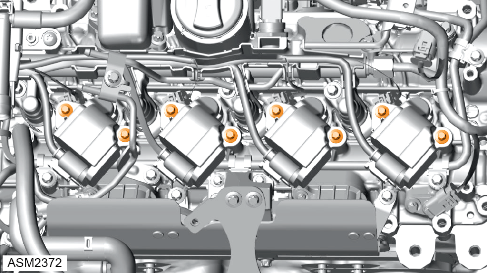
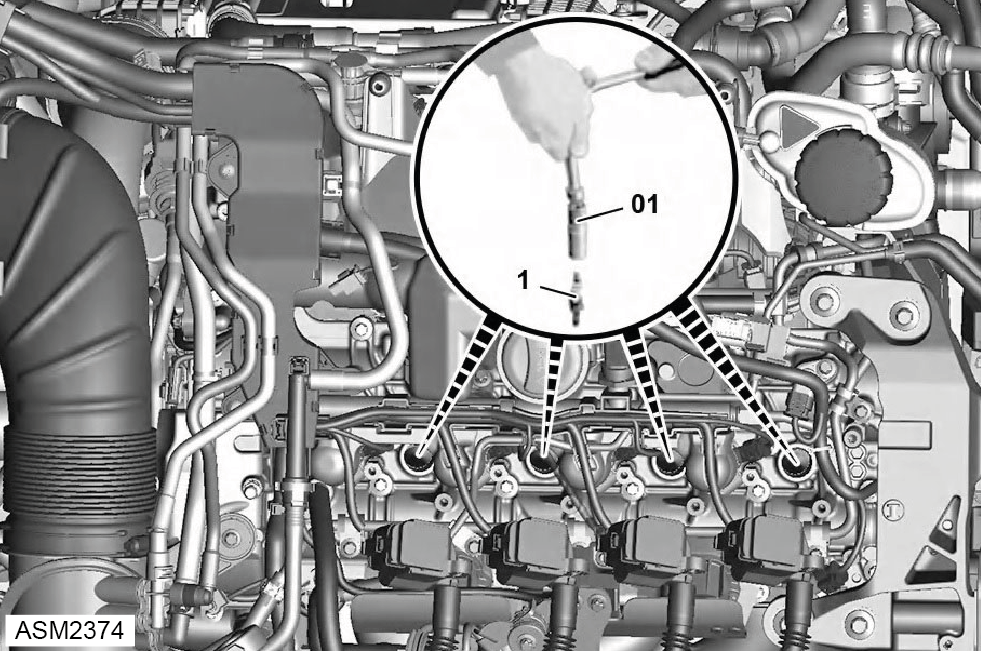
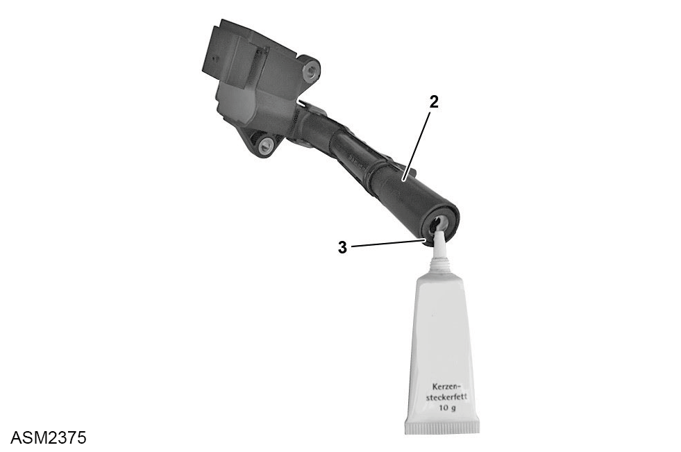

Spark Plug - Single - 4 Cylinder
Print
Operation Code: 40.17.14-02
Removal
- Remove ignition coil. Refer to procedure.

- Remove bolts (x2) securing ignition coil to engine. Torque 8 Nm.
- Disconnect ignition coil from spark plug and move aside.

- Remove spark plug (1) using spark plug wrench (01). Torque 15 Nm.
Installation
- Installation is the reverse of removal procedure except for the following:

- Apply spark plug connector grease to spark plug connector (3) of ignition coil (2).